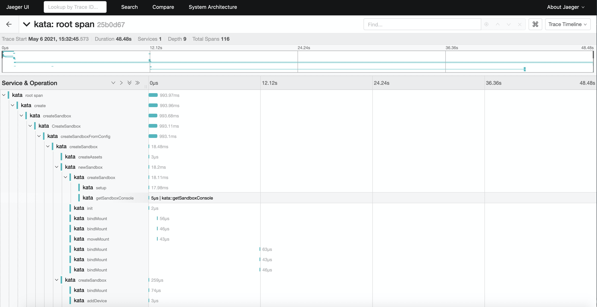

使用 Jaeger 输出 Kata Containers 的 Trace
这个实例介绍了如何在宿主机上运行 Jaeger 容器，并将本机上运行的 Kata Containers 容器的 trace 信息发送到本地 jaeger collector。
启动 jaegre
使用 Docker 来运行 jaeger 是非常方便的方式。
$ docker run -d --name jaeger \
-e COLLECTOR_ZIPKIN_HOST_PORT=:9411 \
-p 5775:5775/udp \
-p 6831:6831/udp \
-p 6832:6832/udp \
-p 5778:5778 \
-p 16686:16686 \
-p 14268:14268 \
-p 14250:14250 \
-p 9411:9411 \
jaegertracing/all-in-one:1.22
配置 Kata Containers
启用 runtime 的 trace
启用 agent 的 trace
TODO(waitting https://github.com/kata-containers/kata-containers/pull/411).
创建容器
按照下面的步骤创建并删除 Pod/container：
$ p=`crictl runp -runtime kata pod.yaml`
$ c=`crictl create $p container.yaml pod.yaml`
$ crictl start $c
$ crictl stop $c
$ crictl stopp $p
$ crictl rmp $p
然后到 jaeger 界面（http://your server:16686）就可以看到 名为 kata 的服务所产生的 trace 了。
